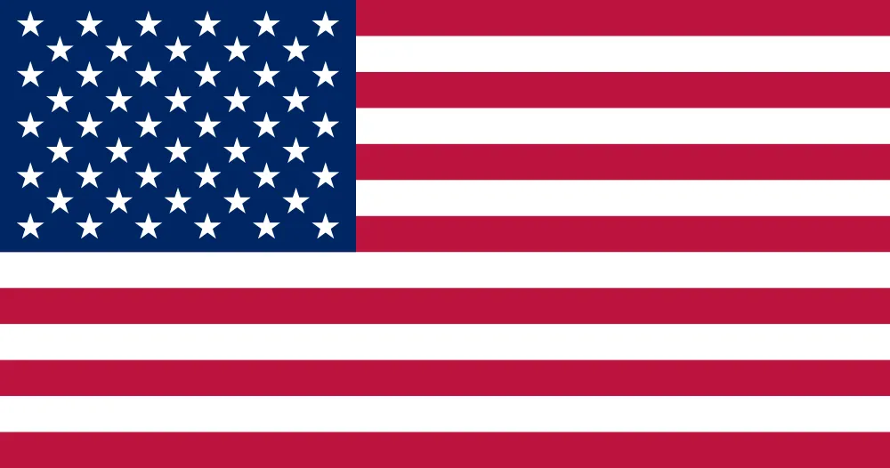
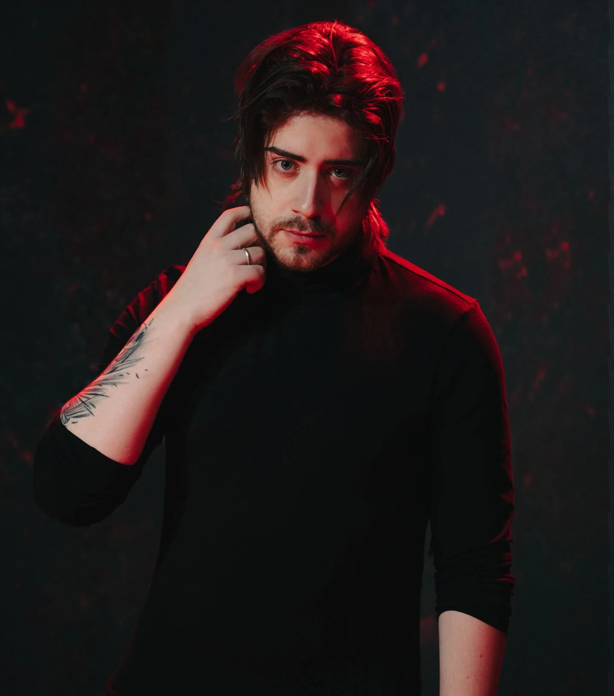
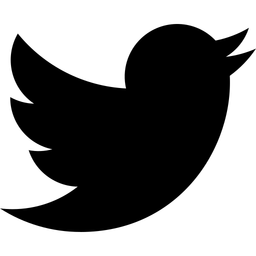
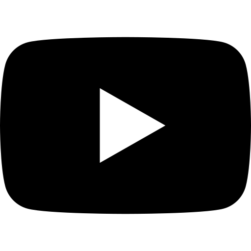
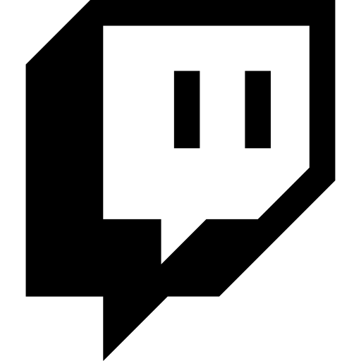

O paranormal não vem para a nossa realidade de maneira fácil. Ou pelo menos, as coisas deveriam ser assim.
O mundo tem uma base de sanidade sólida, por isso as manifestações paranormais do Outro Lado são apenas encontradas em locais específicos.
A membrana que separa a nossa realidade do Outro Lado pode ser enfraquecida pelo Medo, e diversos grupos de ocultistas estão dispostos a fazer o que for preciso para enfraquecer essa Membrana e invocar as entidades do Outro Lado.
Por causa disso, uma organização de detetives paranormais foi criada: a Ordo Realitas. Vivendo vidas duplas, os agentes da Ordem secretamente investigam e combatem o paranormal, protegendo a Realidade e lutando contra aqueles que estão apenas dispostos a mergulhar o mundo em caos.
Ordem Paranormal é um universo de investigação paranormal, criado por Rafael Lange.



Rafael Lange, mais conhecido pelo seu pseudônimo Cellbit, é o criador do universo de Ordem Paranormal. Além disso, atua como roteirista, diretor criativo e criador de conteúdo nas plataformas YouTube e Twitch. É diretor criativo do jogo Ordem Paranormal: Enigma do Medo. Na versão RPG de mesa do universo, ele atua como narrador, responsável por gerir todo o mundo de criaturas, personagens e acontecimentos.




Seja o primeiro a receber novidades do Universo de Ordem Paranormal! Inscreva-se para receber as últimas notícias, atualizações, conteúdos exclusivos, ofertas e mais, por e-mail.